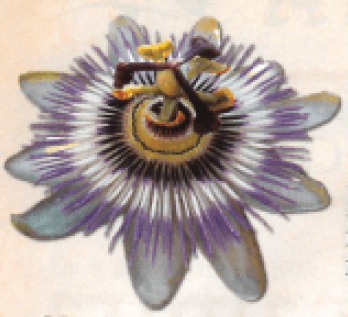

Os índios a chamavam
de mara kuya: alimento da cuia.
Contém passiflorina, um
calmante; pectina, um protetor
do coração, inimigo do
diabetes. Rica em vitaminas A,
B e C; cálcio, fósforo, ferro. A
fruta é gostosa de tudo quanto
é jeito. E que beleza de flor!

Mylton Severiano. Almanaque de Cultura Popular, ano 10, set./2008, n.º 113 (com adaptações).
Na construção da textualidade, assinale a função do conectivo “E”, que inicia a última frase do texto.